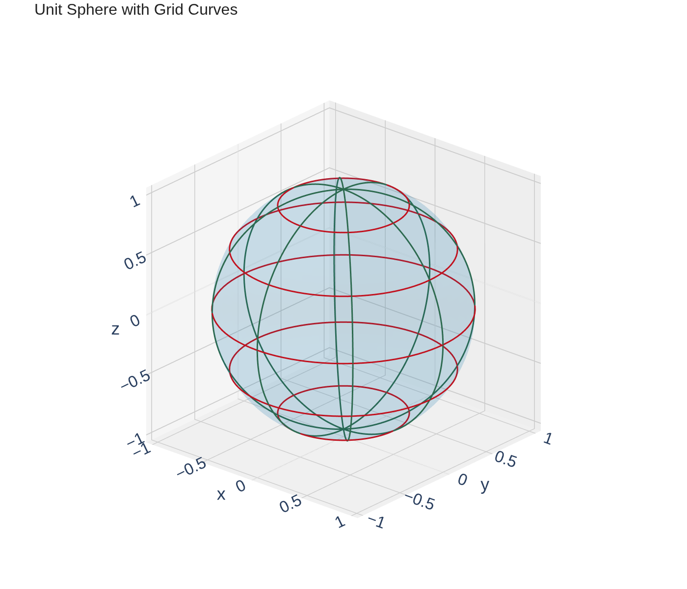
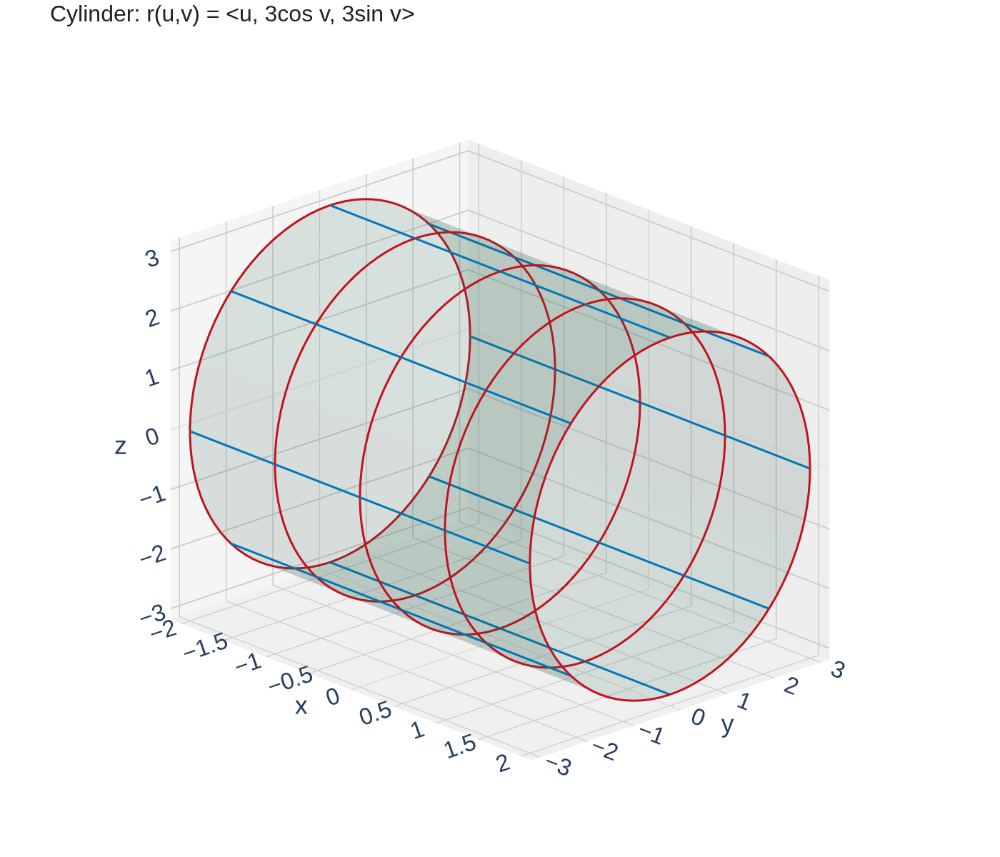
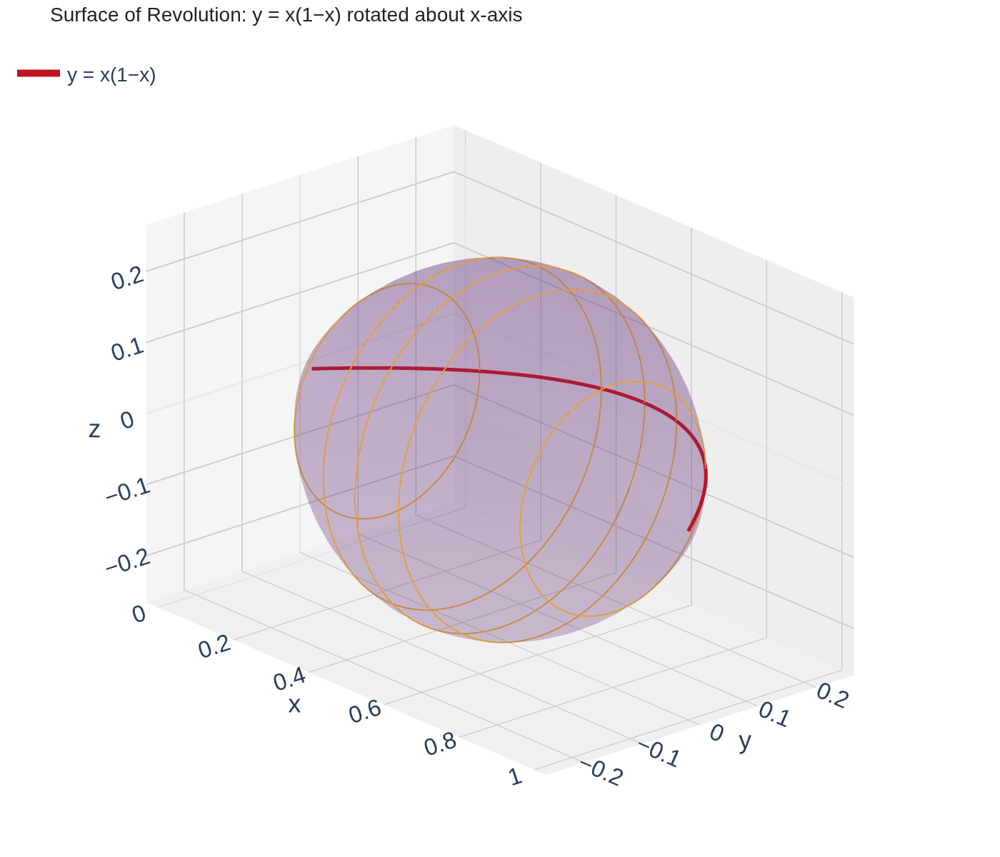
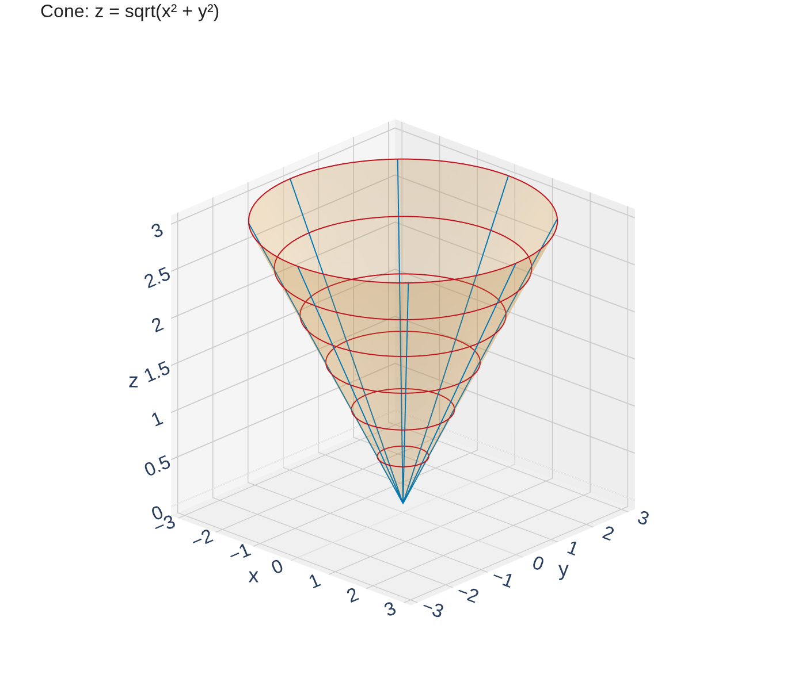
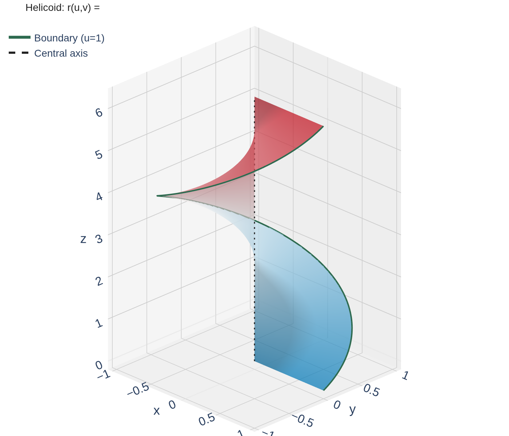

From Parametric Curves to Parametric Surfaces
In Chapter 13 we parameterized curves in space with one parameter:
\[\vec{r}(t) = \langle x(t),\; y(t),\; z(t) \rangle, \quad a \leq t \leq b\]
One parameter traces out a one-dimensional object (a curve).
To describe a surface (a two-dimensional object in \(\mathbb{R}^3\)), we need two parameters:
A parametric surface \(S\) is defined by a vector function
\[\vec{r}(u,v) = \langle x(u,v),\; y(u,v),\; z(u,v) \rangle\]
where \((u,v)\) varies over a parameter domain \(D \subseteq \mathbb{R}^2\).
As \((u,v)\) ranges over \(D\), the function \(\vec{r}\) bends the flat rectangle into the curved surface \(S\). The grid lines go along for the ride — the blue \(u\)-curves and red \(v\)-curves on \(S\) are the images of the grid lines in \(D\).
One parameter \(\to\) curve. Two parameters \(\to\) surface. Think of \(\vec{r}(u,v)\) as wrapping a flat sheet of paper (the domain \(D\)) around an object in space.
Example 1: The Unit Sphere
Find a parametric representation for the unit sphere \(x^2 + y^2 + z^2 = 1\).
Use spherical coordinates with \(\rho = 1\). What are \(x\), \(y\), \(z\) in terms of \(\phi\) and \(\theta\)?
Reuse spherical coordinates from Section 15.8 with \(\rho = 1\):
\[x = \sin\phi\cos\theta, \quad y = \sin\phi\sin\theta, \quad z = \cos\phi\]
Parametric representation:
\[\vec{r}(\theta,\phi) = \langle \sin\phi\cos\theta,\; \sin\phi\sin\theta,\; \cos\phi \rangle\]
with \(0 \leq \phi \leq \pi\) and \(0 \leq \theta \leq 2\pi\).

The grid curves are:
- Fix \(\phi = \phi_0\): circles of latitude (horizontal circles at height \(z = \cos\phi_0\))
- Fix \(\theta = \theta_0\): semicircles of longitude (meridians from pole to pole)
Same angle conventions as 15.8 spherical coordinates: \(\phi\) runs \(0\) to \(\pi\) (polar angle from north pole), \(\theta\) runs \(0\) to \(2\pi\) (azimuthal around \(z\)-axis). No new naming to learn.
Example 2: Identify the Surface
Describe and sketch the surface with parametric equations
\[\vec{r}(u,v) = \langle u,\; 3\cos v,\; 3\sin v \rangle\]
For a fixed \(u\), what does the point \((u, 3\cos v, 3\sin v)\) trace as \(v\) varies? What shape has \(y^2 + z^2 = \text{const}\)?
Fix \(u = u_0\): The point traces \((u_0, 3\cos v, 3\sin v)\) — a circle of radius 3 in the plane \(x = u_0\).
Eliminate the parameter: \(y^2 + z^2 = 9\cos^2 v + 9\sin^2 v = 9\)
This is a circular cylinder of radius 3 centered on the \(x\)-axis.

The grid curves are:
- Fix \(u\): circles of radius 3 perpendicular to the \(x\)-axis (red)
- Fix \(v\): horizontal lines running along the \(x\)-axis direction (blue)
Strategy: fix one parameter and see what the other traces, or eliminate both parameters to find a Cartesian equation. Either approach reveals the shape.
Quick Check: Match the Parameterization
What surface does each parameterization describe?
- \(\vec{r}(u,v) = \langle u\cos v,\; u\sin v,\; u \rangle\), \(u \geq 0\), \(\;0 \leq v \leq 2\pi\)
- \(\vec{r}(u,v) = \langle u,\; v,\; 4 - u^2 - v^2 \rangle\)
For (1): eliminate the parameter to find \(x^2 + y^2 = ?\). For (2): what is \(z\) in terms of \(x\) and \(y\)?
(1) \(x = u\cos v\), \(y = u\sin v\), \(z = u\). Then \(x^2 + y^2 = u^2 = z^2\), so \(z = \sqrt{x^2+y^2}\). This is a cone opening upward.
(2) \(x = u\), \(y = v\), \(z = 4 - u^2 - v^2 = 4 - x^2 - y^2\). This is the paraboloid \(z = 4 - x^2 - y^2\) (the parameters are just \(x\) and \(y\)).
When \(u = x\) and \(v = y\), the parameterization reduces to the graph \(z = f(x,y)\). More interesting parameterizations use polar, cylindrical, or spherical-style coordinates.
Surfaces of Revolution
Many surfaces arise by rotating a curve around an axis. The rotation angle becomes the second parameter.
Step 1: the generating curve. Take the curve \(y = f(x)\) in the \(xy\)-plane, \(a \leq x \leq b\).
Step 2: rotate about the \(x\)-axis. At each fixed \(x\), the cross-section is a circle of radius \(|f(x)|\) in the \(yz\)-plane, parameterized by angle \(\theta\):
\[y = f(x)\cos\theta, \qquad z = f(x)\sin\theta\]
Step 3: assemble the full parameterization.
\[\vec{r}(x, \theta) = \langle x,\; f(x)\cos\theta,\; f(x)\sin\theta \rangle, \quad a \leq x \leq b, \;\; 0 \leq \theta \leq 2\pi\]
Give parametric equations for the surface obtained by rotating \(y = x(1-x)\), \(0 \leq x \leq 1\), about the \(x\)-axis.
Use the formula above with \(f(x) = x(1-x)\).
\[\vec{r}(x, \theta) = \langle x,\; x(1-x)\cos\theta,\; x(1-x)\sin\theta \rangle\]
with \(0 \leq x \leq 1\) and \(0 \leq \theta \leq 2\pi\).

For rotation about the \(x\)-axis: replace \(y\) with \(f(x)\cos\theta\) and add \(z = f(x)\sin\theta\). For rotation about the \(y\)- or \(z\)-axis, swap the roles accordingly.
Tangent Vectors to a Parametric Surface

In Section 15.5, we found the surface area correction factor for graphs \(z = f(x,y)\) by taking tangent vectors and computing their cross product. Now we generalize to any parametric surface.
Tangent vectors: At any point \(\vec{r}(u_0, v_0)\), differentiate with respect to each parameter:
\[\vec{r}_u = \frac{\partial \vec{r}}{\partial u} = \left\langle \frac{\partial x}{\partial u},\; \frac{\partial y}{\partial u},\; \frac{\partial z}{\partial u} \right\rangle \qquad \vec{r}_v = \frac{\partial \vec{r}}{\partial v} = \left\langle \frac{\partial x}{\partial v},\; \frac{\partial y}{\partial v},\; \frac{\partial z}{\partial v} \right\rangle\]
\(\vec{r}_u\) is tangent to the \(u\)-curve (hold \(v\) fixed, vary \(u\)).
\(\vec{r}_v\) is tangent to the \(v\)-curve (hold \(u\) fixed, vary \(v\)).
Normal vector: If \(\vec{r}_u \times \vec{r}_v \neq \vec{0}\),
\[\vec{n} = \vec{r}_u \times \vec{r}_v\]
is normal to the surface at that point (perpendicular to both tangent directions).
\(\vec{r}_u\) and \(\vec{r}_v\) span the tangent plane. Their cross product \(\vec{r}_u \times \vec{r}_v\) gives a normal vector. This is exactly the same idea as Section 15.5, but now for general parameterizations.
Surface Area of a Parametric Surface
Same strategy as Section 15.5: approximate each small surface patch by a parallelogram.
![Two panels side by side illustrating the Riemann-sum derivation of the surface area formula. Left panel: the flat parameter domain D is tiled with a six-by-six grid of small rectangles; one cell is highlighted in amber. An arrow labeled r(u,v) connects to the right panel. Right panel: the corresponding curved surface S is tiled with small curvilinear cells that are approximately parallelograms; the cell corresponding to the highlighted rectangle is filled in amber, with two tangent-vector edges r_u times Delta u (red) and r_v times Delta v (blue) marking two sides.](figures/area_riemann.png "Click to interact")
Tile \(D\) with rectangles of size \(\Delta u \times \Delta v\). Under \(\vec{r}\), each rectangle maps to a small patch on \(S\) approximately shaped like a parallelogram.
Patch sides: \(\vec{r}_u \Delta u\) and \(\vec{r}_v \Delta v\). Patch area:
\[\Delta S \approx |\vec{r}_u\,\Delta u \times \vec{r}_v\,\Delta v| = |\vec{r}_u \times \vec{r}_v| \, \Delta u\, \Delta v\]
Sum and take the limit \(\Delta u, \Delta v \to 0\):
If \(S\) is given by \(\vec{r}(u,v)\) for \((u,v) \in D\), and \(\vec{r}\) is smooth, then
\[A(S) = \iint_D |\vec{r}_u \times \vec{r}_v| \, dA\]
Surface area \(=\) \(\displaystyle\iint_D |\vec{r}_u \times \vec{r}_v| dA\). The cross product magnitude is the “correction factor” for how much the parameterization stretches the flat domain into the curved surface.
Quick Check: Compute the Normal Vector
For the cylinder \(\vec{r}(u,v) = \langle u,\; 3\cos v,\; 3\sin v \rangle\), find \(\vec{r}_u\), \(\vec{r}_v\), and \(\vec{r}_u \times \vec{r}_v\).
Differentiate each component with respect to \(u\), then with respect to \(v\). Then compute the cross product.
\(\vec{r}_u = \langle 1, 0, 0 \rangle\) (tangent along the \(x\)-axis)
\(\vec{r}_v = \langle 0, -3\sin v, 3\cos v \rangle\) (tangent around the circle)
\(\vec{r}_u \times \vec{r}_v = \begin{vmatrix} \vec{i} & \vec{j} & \vec{k} \\ 1 & 0 & 0 \\ 0 & -3\sin v & 3\cos v \end{vmatrix} = \langle 0, -3\cos v, -3\sin v \rangle\)
\(|\vec{r}_u \times \vec{r}_v| = \sqrt{0 + 9\cos^2 v + 9\sin^2 v} = 3\)
The correction factor is constant! That makes sense — a cylinder has no curvature in the \(u\)-direction.
For simple surfaces (planes, cylinders), \(|\vec{r}_u \times \vec{r}_v|\) is often constant, which makes the surface area integral easy.
Example 4: Surface Area of a Sphere
Use the parametric representation to find the surface area of a sphere of radius \(R\).
Parameterization: \(\vec{r}(\theta,\phi) = \langle R\sin\phi\cos\theta,\; R\sin\phi\sin\theta,\; R\cos\phi \rangle\), \(0 \leq \phi \leq \pi\), \(\;0 \leq \theta \leq 2\pi\).
Compute \(\vec{r}_\theta\), \(\vec{r}_\phi\), their cross product, and its magnitude. Then integrate over the parameter domain.
Tangent vectors:
\[\vec{r}_\theta = \langle -R\sin\phi\sin\theta,\; R\sin\phi\cos\theta,\; 0 \rangle\]
\[\vec{r}_\phi = \langle R\cos\phi\cos\theta,\; R\cos\phi\sin\theta,\; -R\sin\phi \rangle\]
Cross product:
\[\vec{r}_\theta \times \vec{r}_\phi = \langle -R^2\sin^2\!\phi\cos\theta,\; -R^2\sin^2\!\phi\sin\theta,\; -R^2\sin\phi\cos\phi \rangle\]
\[|\vec{r}_\theta \times \vec{r}_\phi| = R^2\sqrt{\sin^4\!\phi\cos^2\!\theta + \sin^4\!\phi\sin^2\!\theta + \sin^2\!\phi\cos^2\!\phi}\]
\[= R^2\sqrt{\sin^4\!\phi + \sin^2\!\phi\cos^2\!\phi} = R^2\sqrt{\sin^2\!\phi(\sin^2\!\phi + \cos^2\!\phi)} = R^2\sin\phi\]
(since \(\sin\phi \geq 0\) for \(0 \leq \phi \leq \pi\)).
Example 4: Surface Area of a Sphere
Integrate:
\[A = \iint_D |\vec{r}_\theta \times \vec{r}_\phi| \, dA = \int_0^{2\pi} \int_0^{\pi} R^2 \sin\phi \, d\phi \, d\theta\]
\[= R^2 \int_0^{2\pi} \left[-\cos\phi\right]_0^{\pi} d\theta = R^2 \int_0^{2\pi} 2 \, d\theta = 4\pi R^2\]
We recover \(A = 4\pi R^2\) using the parametric surface area formula. The factor \(R^2\sin\phi\) is the 2D surface version of the familiar \(\rho^2\sin\phi\) volume element from Section 15.8. Same angular stretching, one dimension lower.
Example 5: Surface Area of a Cone
Find the surface area of the cone \(z = \sqrt{x^2 + y^2}\) below \(z = 3\).
Parameterize using \(r\) (radius) and \(\theta\). Write \(\vec{r}(r,\theta) = \langle r\cos\theta, r\sin\theta, r\rangle\). Then find \(|\vec{r}_r \times \vec{r}_\theta|\) and integrate.

Parameterization: \(\vec{r}(r,\theta) = \langle r\cos\theta,\; r\sin\theta,\; r \rangle\), \(0 \leq r \leq 3\), \(\;0 \leq \theta \leq 2\pi\).
Tangent vectors:
\[\vec{r}_r = \langle \cos\theta,\; \sin\theta,\; 1 \rangle \qquad \vec{r}_\theta = \langle -r\sin\theta,\; r\cos\theta,\; 0 \rangle\]
Cross product and magnitude:
\[\vec{r}_r \times \vec{r}_\theta = \langle -r\cos\theta,\; -r\sin\theta,\; r \rangle, \qquad |\vec{r}_r \times \vec{r}_\theta| = r\sqrt{2}.\]
Integrate:
\[A = \int_0^{2\pi}\!\int_0^{3} r\sqrt{2}\, dr\, d\theta = \sqrt{2}\cdot\frac{9}{2}\cdot 2\pi = 9\pi\sqrt{2}.\]
Geometric sanity check: lateral surface of a cone \(= \pi \cdot r_{\text{base}} \cdot \ell\) where \(\ell\) is the slant height. Here \(r_{\text{base}} = 3\) and \(\ell = 3\sqrt{2}\) (since the cone makes a \(45^\circ\) angle), giving \(\pi \cdot 3 \cdot 3\sqrt{2} = 9\pi\sqrt{2}\;\checkmark\)
The cone's correction factor \(\sqrt{2}\) reflects the \(45^\circ\) surface angle. The extra \(r\) comes from the polar parameterization — same role as the \(r\) in \(r\,dr\,d\theta\).
Special Case: Graphs \(z = f(x,y)\) Revisited
Let's verify that the parametric formula recovers our Section 15.5 result.
Parameterization of a graph: \(\vec{r}(x,y) = \langle x,\; y,\; f(x,y) \rangle\)
Tangent vectors:
\[\vec{r}_x = \langle 1,\; 0,\; f_x \rangle \qquad \vec{r}_y = \langle 0,\; 1,\; f_y \rangle\]
Cross product:
\[\vec{r}_x \times \vec{r}_y = \begin{vmatrix} \vec{i} & \vec{j} & \vec{k} \\ 1 & 0 & f_x \\ 0 & 1 & f_y \end{vmatrix} = \langle -f_x,\; -f_y,\; 1 \rangle\]
\[|\vec{r}_x \times \vec{r}_y| = \sqrt{f_x^2 + f_y^2 + 1}\]
So the parametric surface area formula gives:
\[A(S) = \iint_D |\vec{r}_x \times \vec{r}_y|\, dA = \iint_D \sqrt{f_x^2 + f_y^2 + 1}\, dA\]
This is exactly the formula from Section 15.5!
The graph formula \(\sqrt{f_x^2 + f_y^2 + 1}\) is the special case of \(|\vec{r}_u \times \vec{r}_v|\) when \(u = x\), \(v = y\). The parametric formula is more general — it handles surfaces that can't be written as graphs (spheres, tori, etc.).
Quick Check: Compute the Correction Factor
For the paraboloid \(\vec{r}(r,\theta) = \langle r\cos\theta,\; r\sin\theta,\; r^2 \rangle\), \(0 \leq r \leq 2\), find \(|\vec{r}_r \times \vec{r}_\theta|\).
Find \(\vec{r}_r\) and \(\vec{r}_\theta\), compute the cross product, then take the magnitude.
\(\vec{r}_r = \langle \cos\theta,\; \sin\theta,\; 2r \rangle\), \(\vec{r}_\theta = \langle -r\sin\theta,\; r\cos\theta,\; 0 \rangle\)
\(\vec{r}_r \times \vec{r}_\theta = \langle -2r^2\cos\theta,\; -2r^2\sin\theta,\; r \rangle\)
\(|\vec{r}_r \times \vec{r}_\theta| = \sqrt{4r^4\cos^2\!\theta + 4r^4\sin^2\!\theta + r^2} = \sqrt{4r^4 + r^2} = r\sqrt{4r^2 + 1}\)
Compare to the graph approach: \(z = x^2 + y^2\) gives \(\sqrt{4x^2 + 4y^2 + 1} = \sqrt{4r^2 + 1}\). The parametric version picks up an extra \(r\) — the polar stretching already built into the parameterization, doing the same job as the \(r\) in \(r\,dr\,d\theta\).
Example 6: Surface Area of a Helicoid
Find the surface area of the helicoid \(\vec{r}(u,v) = \langle u\cos v,\; u\sin v,\; v \rangle\) for \(0 \leq u \leq 1\), \(0 \leq v \leq 2\pi\).

Compute \(\vec{r}_u\), \(\vec{r}_v\), then \(|\vec{r}_u \times \vec{r}_v|\), and set up the double integral.
Tangent vectors:
\[\vec{r}_u = \langle \cos v,\; \sin v,\; 0 \rangle \qquad \vec{r}_v = \langle -u\sin v,\; u\cos v,\; 1 \rangle\]
Cross product:
\[\vec{r}_u \times \vec{r}_v = \langle \sin v,\; -\cos v,\; u \rangle \qquad |\vec{r}_u \times \vec{r}_v| = \sqrt{1 + u^2}.\]
Integrate:
\[A = \int_0^{2\pi}\!\int_0^{1} \sqrt{1+u^2}\, du\, dv = 2\pi \int_0^1 \sqrt{1+u^2}\, du.\]
For \(\int \sqrt{1+u^2}\,du\), use the hyperbolic substitution \(u = \sinh t\) (or tables) to get:
\[\int \sqrt{1+u^2}\,du = \frac{1}{2}\left[u\sqrt{1+u^2} + \ln(u+\sqrt{1+u^2})\right]\]
Evaluating from \(0\) to \(1\):
\[A = 2\pi \cdot \frac{1}{2}\left[\sqrt{2} + \ln(1+\sqrt{2})\right] = \pi\left[\sqrt{2} + \ln(1+\sqrt{2})\right]\]
The helicoid is a “spiral ramp” — one of the classic minimal surfaces. Even though it twists through space, the area computation follows the same recipe: parameterize, cross product, integrate.
Section 16.6 Summary
\(\vec{r}(u,v) = \langle x(u,v), y(u,v), z(u,v) \rangle\) for \((u,v) \in D\). Two parameters describe a surface just as one parameter describes a curve.
Sphere: \(\langle R\sin\phi\cos\theta, R\sin\phi\sin\theta, R\cos\phi \rangle\). Cylinder: \(\langle u, a\cos v, a\sin v \rangle\). Cone: \(\langle r\cos\theta, r\sin\theta, r \rangle\). Graph: \(\langle x, y, f(x,y) \rangle\).
\(\vec{r}_u\) and \(\vec{r}_v\) are tangent to the surface. \(\vec{r}_u \times \vec{r}_v\) is normal to the surface. This generalizes \(\langle -f_x, -f_y, 1 \rangle\) from Section 15.5.
\(A(S) = \displaystyle\iint_D |\vec{r}_u \times \vec{r}_v| dA\). The cross product magnitude is the correction factor for how the parameterization stretches the flat domain \(D\) into the curved surface.
Section 16.7 uses \(\vec{r}_u \times \vec{r}_v\) to define surface integrals — integrating a function over a surface and computing flux of a vector field through a surface.
Homework
Section 16.6
1, 3, 5, 7, 9, 13--18, 19, 21, 23, 25, 33, 35, 39, 41, 43, 45, 47, 49